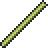

Breathing Reed
| Breathing Reed | |
|---|---|
|  | |
| Statistics | |
| Type | Tool |
| Max stack | 1 |
| Rarity | Blue |
| Tooltip | Because not drowning is kinda nice |
| Sell | 20 |
The Breathing Reed is an item that can be found in underwater chests. When held, a reed will appear above your character, decreasing the rate of air loss (Including drowning health loss rate) by 50% and making him/her able to breathe when the reed's end is above the water instead of them. The downside to using it is that you need to keep it held, so you can't fight, dig or do anything else when using it. Keep in mind, if the end of the reed hits the inside of a block rather than air, it does not recover your breathing meter. An easy way to obtain one of these is to check the Ocean on both sides of the map.
History
- 1.0.4: Tooltip was recovered.
- Pre-Release: Introduced.
Bugs
When clicked on in the inventory, a larger image of it will appear at the top of the screen.